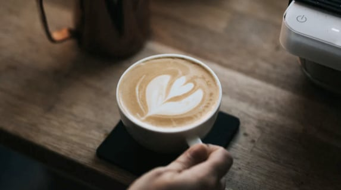
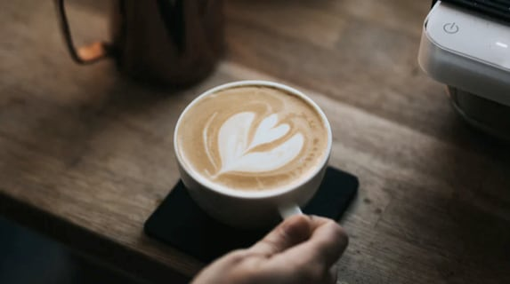

About us
Coffeeroasters began its journey of exotic discovery in 1999, highlighting stories of coffee from around the world. We have since been dedicated to bring the perfect cup - from bean to brew - in every shipment.


Our commitment
We're built on a simple mission and a commitment to doing good along the way. We want to make it easy for you to discover and brew the world's best coffee at home. It all starts at the source. To locate the specific lots we want to purchase, we travel nearly 60 days a year trying to understand the challenges and opportunities in each of these places. We collaborate with exceptional coffee growers and empower a global community of farmers through with well above fair-trade benchmarks. We also offer training, support farm community initiatives, and invest in coffee plant science. Curating only the finest blends, we roast each lot to highlight tasting profiles distinctive to their native growing region.
 


Uncompromising quality
Although we work with growers who pay close attention to all stages of harvest and processing, we employ, on our end, a rigorous quality control program to avoid over-roasting or baking the coffee dry. Every bag of coffee is tagged with a roast date and batch number. Our goal is to roast consistent, user-friendly coffee, so that brewing is easy and enjoyable.
Our headquarters

Canada
1528 Eglinton Avenue
Toronto
Ontario M4P 1A6
+1 416 485 2997

United Kingdom
68 Asfordby Rd
Alcaston
SY6 1YA
+44 1241 918425

Australia
36 Swanston Street
Kewell
Victoria
+61 4 9928 3629